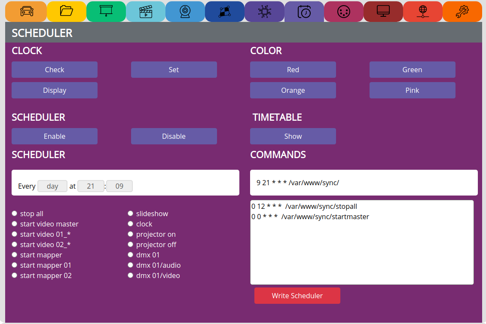

SCHEDULER¶
see video tutorial: https://video.pocketvj.com/AVideo/video/10/pocketvj_exhibition_scheduler
CLOCK¶
Check => Check internal date and time
Display => Show a clock on screen
Set => Sets the correct time from the user accessing the PocketVJ, might take 2 attempts
TIMETABLE¶
Show => to make sure the timetable is loaded to PocketVJ
COMMANDS¶
Write Scheduler => Write the made timetable to system
Note
make sure the last command is an empty line!
Every task seen in the Control Panel can be scheduled!